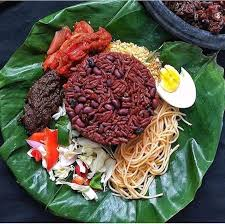

Waakye Recipe

Description
Waakye is a popular Ghanaian breakfast or lunch dish made from rice and beans. Here is a simple recipe to make delicious waakye.
Ingredients
- 1 cup black eye beans, washed and drained
- 3-4 sorghum leaves
- 2 cups of white rice
- 1 tsp salt
Steps
- In a pot of 2 cups of boiling water, add washed beans and sorghum leaves. Cover your beans then reduce to simmer and cook for about an hour or until beans are tender.
- After the beans are tender and fully cooked, remove the sorghum leaves.
- Rinse your rice with water to your satisfaction.
- Add rice to beans and top with 1 cup of water. Add salt to your satisfaction.
- Bring rice and beans mixture to boil and reduce heat to medium. Cook for about 30 minutes or until you are satisfied with the tenderness and water content of your beans while stirring occasinally.
Back to recipe homepage